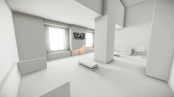

Эта функция все еще находится в стадии бета-тестирования и может постоянно меняться. Мы рекомендуем вам использовать его в тестовых проектах и оставить нам свои отзывы.
Однако, DO NOT используйте его в производстве, где он создает зависимости! Всегда создавайте резервные копии своих проектов, чтобы иметь возможность вернуться к предыдущей версии.
Режим «GI без вокселей»
Это очень экспериментальный режим, представленный в CE 5.2. Предполагается, что его следует использовать только в очень немногих случаях. В основном это может быть полезно для небольших сцен в помещении, где требуется высокое разрешение и непрямое освещение без утечек.
Вместо автоматической вокселизации дизайнер уровней может построить упрощенную прокси-сцену из базовых аналитических форм, таких как коробки, цилиндры и капсулы. Движок будет использовать эту прокси-сцену вместо вокселей (в будущем они, возможно, будут работать вместе).
Это может показаться более ручной работой для дизайнера уровней, но если мы посмотрим, сколько часов дизайнеры (используя другие движки) тратят на ожидание расчета карты освещения после каждого перемещения объекта или изменения параметров, для производства может стать более эффективным просто разместить 20-30 прокси-объектов в сцене и немедленно увидеть окончательное освещение и иметь прямой контроль над освещением в реальном времени.
Этот режим можно активировать, установив флажок Аналитический GI в свойствах GI. Когда он включен, трассировка вокселей полностью исключается.
На этом снимке экрана вся геометрия, которую вы видите, на самом деле является прокси-геометрией, которая будет невидима в финальной сцене.
Прокси-геометрия (сцена сделана Enes77) 
В сцене есть 2 компонента освещения:
- Портал используется в качестве площадного источника света для имитации первичного отражения от неба с резкими контактными тенями.
- Проход AO используется для имитации вторичных отражений, а также для сбора отражений от солнечного света. Это не очень остро.
Вот демо-уровень, он совместим только с CE 5.2: AGIDemo2.zip
Обратите внимание на изменения в правилах использования суффиксов:
| Суффикс | Описание | Поддерживаемые режимы |
|---|---|---|
| _TI_AO | Обычный окклюдер для аналитический GI (работает для портала освещение, AO и свет отражается) | Только для аналитического режима GI |
| _TI_AOH | То же, что и раньше, но создает более консервативную (без утечек) тень. | Только для аналитического режима GI |
| _TI_PO | Пост-окклюдер используется со средним направлением света (это старый окклюдер "_TI_AO") | Работает во всех режимах |
Текущие ограничения:
- Отскок света пока работает только в режиме 0.
- Максимальное количество окклюдеров на экране — 48 (но на всем уровне их могут быть сотни)
- Производительность не является окончательной и должна быть в 3-4 раза выше, когда мы решим продолжить разработку этой функции.
Обратная связь
Поскольку это бета-функция, она все еще находится в разработке, и нам бы хотелось услышать, что вы о ней думаете. Пожалуйста, предоставьте нам любые отзывы, которые вы имеете через !